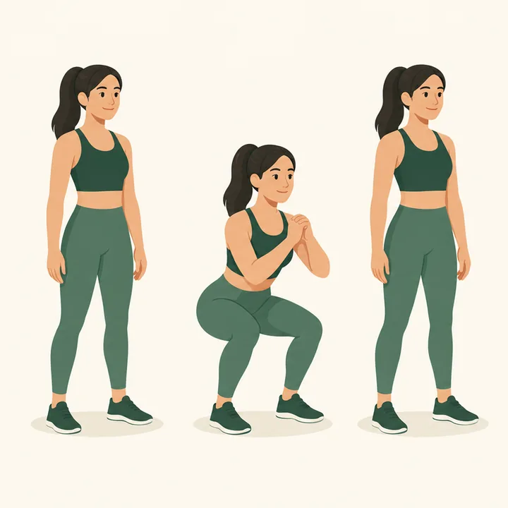
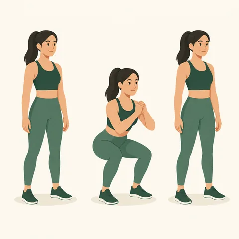
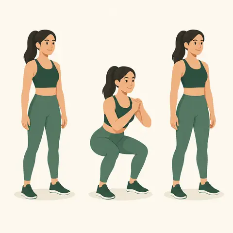
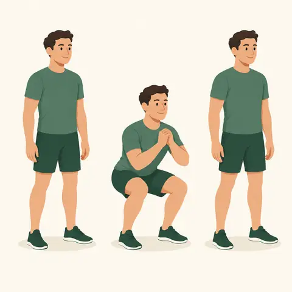

WebP 720 × 720, kvalitet 8221 294 byte · högsta testkvalitet
FLEX · BILDKVALITETSTEST
Tryck eller zooma och jämför framför allt ansikte, händer, klädkanter och böjda ben. Bilderna är riktiga komprimerade filer, inte storleksuppskattningar.




